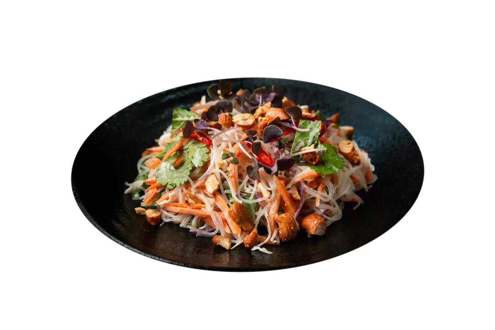

🍣 המנות הבריאות והמומלצות של ג'פניקה
🍱 המוזמנים ביותר

סלט אטריות שעועית
כרוב לבן וסגול, גזר, צ'ילי אדום, נענע, כוסברה ועלי מיקרו ברוטב חמאת בוטנים וטחינה.
🔥 390 קלוריות
💪 12 גרם חלבון
₪37
פוטומאקי דג וירק
רול עם דג אפוי, ירקות טריים ואצת נורי.
🔥 280 קלוריות
💪 16 גרם חלבון
₪36